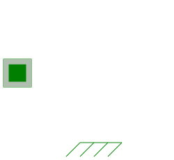
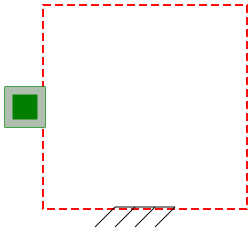
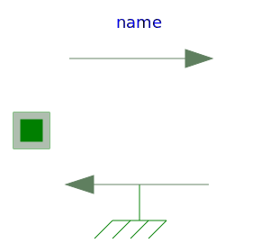
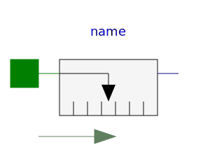
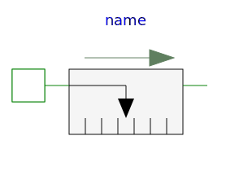

This package contains connectors and partial models for 1-dim. translational mechanical components. The components of this package can only be used as basic building elements for models.
| Name | Description |
|---|---|
| One-dimensional translational flange | |
| One-dimensional translational flange (left, flange axis directed INTO cut plane) | |
| One-dimensional translational flange (right, flange axis directed OUT OF cut plane) | |
| Support/housing flange of a one-dimensional translational component | |
| Adapter model to utilize conditional support connector | |
|
|
Component with two translational 1D flanges |
|
|
Partial model for a component with one translational 1-dim. shaft flange and a support used for graphical modeling, i.e., the model is build up by drag-and-drop from elementary components |
|
|
Partial model for a component with two translational 1-dim. shaft flanges and a support used for graphical modeling, i.e., the model is build up by drag-and-drop from elementary components |
| Rigid connection of two translational 1D flanges | |
|
|
Compliant connection of two translational 1D flanges |
|
|
Base model for the compliant connection of two translational 1-dim. shaft flanges where the relative position and relative velocities are used as states |
|
|
Obsolete partial model. Use PartialElementaryOneFlangeAndSupport2. |
|  PartialElementaryOneFlangeAndSupport2 | Partial model for a component with one translational 1-dim. shaft flange and a support used for textual modeling, i.e., for elementary models |
|  PartialElementaryTwoFlangesAndSupport | Obsolete partial model. Use PartialElementaryTwoFlangesAndSupport2. |
|
|
Partial model for a component with one translational 1-dim. shaft flange and a support used for textual modeling, i.e., for elementary models |
|
|
Partial model to transform rotational into translational motion |
|  PartialForce | Partial model of a force acting at the flange (accelerates the flange) |
|  PartialAbsoluteSensor | Device to measure a single absolute flange variable |
|  PartialRelativeSensor | Device to measure a single relative variable between two flanges |
| Base model of Coulomb friction elements |